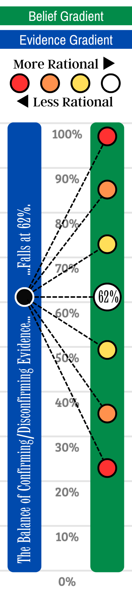

Read This First
If this page feels abrupt, start here
These links provide the wider frame, earlier distinction, or branch map that makes the current page easier to enter.
-
Mapping Belief to Evidence
Start here if the current page feels compressed: Mapping Belief to Evidence gives the broader frame before the argument narrows into the present pressure.
-
Epistemology Branch Guide
If this page feels abrupt, start with the Epistemology branch guide so the wider map is visible before the close reading begins.
Read This Next
If the page clicked, continue here
These are not just nearby pages. They are the strongest next moves if you want the pressure of this page to keep unfolding.
-
Extraordinary Claims
Extraordinary Claims keeps the same branch pressure in view but turns it from a different angle.
-
“Adequate” Evidence
“Adequate” Evidence keeps the same branch pressure in view but turns it from a different angle.
-
Preponderance of Evidence?
Preponderance of Evidence? keeps the same branch pressure in view but turns it from a different angle.

Prompt 1: Describe the content of this graphic.
What the graphic is actually showing
The image presents two vertical scales that the reader is supposed to compare rather than collapse into one. On the left, a blue evidence column says the balance of confirming and disconfirming evidence falls at 62%. On the right, a green belief column shows a range of possible doxastic responses to that same evidential situation.
The black marker at 62% on the evidence side is connected by dashed lines to several possible belief positions on the right: roughly 25%, 40%, 55%, 62%, 75%, 88%, and 98%. The point is not that all of these are equally defensible. It is that the same evidential state can be met by more or less disciplined belief calibration.
The legend at the top supplies the normative judgment. The white circle marks the most rational position, and the colored circles become less rational the farther they move away from the evidential level. In other words, the graphic treats closeness to the evidence as the main epistemic virtue and deviation from it as a form of miscalibration.
- Left side: evidence is fixed at 62%, not moving during the example.
- Right side: belief can overshoot, match, or undershoot that evidential support.
- White marker at 62%: the graphic treats matched credence as the most rational response.
- Warm colors away from 62%: they register increasing irrationality in either direction, not just overconfidence.
- Key contrast: being too skeptical can be as epistemically distorted as being too certain.
Prompt 2: Can individual A rationally say at the end of the period, ‘I knew it all along’ if they maintained their high degree of belief without mapping it to the relevant evidence as it fluctuated?
Why “I knew it all along” still fails at the top end
If individual A sat near the 100% end of the belief gradient while the evidence remained at 62%, the graphic treats that posture as overbelief. A happened to land near the eventual truth only in the sense that a confident guess can turn out right. That is not the same as having believed in proportion to what the evidence warranted.
So the strongest answer is no: A cannot straightforwardly claim “I knew it all along” if the confidence level was not earned when it was held. Knowledge is not just arriving at the correct conclusion; it requires the right sort of evidential support at the time of belief. Retrospective vindication does not erase earlier overconfidence.
A useful comparison is a weather forecaster who insists on a 99% chance of rain every morning and then celebrates on the days it rains. Occasional success does not prove rational calibration. The issue is whether the confidence tracked the evidence, not whether the outcome later looked flattering.
- Right conclusion, wrong route: a true belief can still be epistemically undisciplined.
- Luck versus justification: getting the world right by accident is weaker than believing responsibly.
- The graphic’s standard: rationality tracks distance from 62%, not eventual emotional satisfaction.
- What A lacks: a reason for near-certainty proportionate to the support shown.
Prompt 3: Was individual C rational to wait until the evidence reached a particular threshold to flip from disbelief to belief?
When a threshold helps, and when it distorts
If individual C stays low until some threshold well above 62% and then flips into belief, the answer depends on what “belief” is doing. If belief here means credence, then the graphic says C is too skeptical. A 62% evidential balance calls for a credence near 62%, not a binary refusal to move until much later.
If belief instead means a decision rule for action, a threshold can be rational. A juror may need a much higher bar than 62% before convicting. A surgeon may need stronger support before performing an irreversible procedure. In those cases the threshold belongs to the stakes of acting, not to the evidential support itself.
The graphic is therefore best read as a warning against conflating two questions: “What credence does the evidence support?” and “At what point should I commit to a costly action?” C may be rationally cautious in action while still being epistemically miscalibrated in pure belief.
- As credence: waiting for 75% or 90% before moving at all is too skeptical.
- As action policy: a higher threshold may be justified by the cost of error.
- Main distinction: evidential support and action thresholds should not be treated as the same scale.
- Why the graphic matters: it forces the reader to separate calibration from prudence.
Prompt 4: Provide three scenarios in which the cost of belief would be high, epistemically justifying disbelief.
Three high-cost cases that pressure the graphic
The graphic is strongest when read as a map of credence, but real life introduces stakes. In some settings, the cost of false belief is so high that a person may remain practically resistant even when the evidence sits near 62%. That does not mean the evidence drops below 62%; it means the decision threshold rises above it.
Criminal conviction Suppose the available evidence supports guilt at something like 62%. That may justify serious suspicion, but not belief strong enough to convict. Because the cost of wrongful punishment is extreme, practical disbelief remains justified even while the evidential picture is non-trivial.
Irreversible surgery A physician might judge one diagnosis more likely than not, yet still refuse to proceed with an amputation or sterilizing procedure. Here a 62% evidential balance is too weak for action because the downside of believing falsely is catastrophic.
Escalatory military response Intelligence may suggest a 62% chance that an adversary is preparing an attack, but that is still too weak to justify a first strike. The cost of a false positive is so large that the rational action rule sits far above the evidential midpoint.
- Common structure: the evidence leans one way, but not enough to license a costly commitment.
- What stays constant: evidential support and practical commitment remain separate questions.
- Why this matters for the graphic: the image needs supplementation by stakes once belief guides action.
Prompt 5: In your three scenarios, what would be the actual danger of mapping one’s belief to the degree of the evidence?
The real danger is confusing credence with commitment
The graphic encourages a healthy habit: do not drift too far from the evidence. But in high-cost settings the danger lies in turning a calibrated credence directly into a decision or a social declaration that carries much more weight than the evidence can bear.
At 62%, the rational credence may indeed be near 62%. The problem begins when someone treats “62% likely” as if it already meant “believe strongly enough to imprison, cut, bomb, or publicly condemn.” That is not good calibration. It is a category mistake between probabilistic assessment and irreversible commitment.
So the page should end with a refinement, not a rejection, of the graphic: map belief to evidence when the question is epistemic honesty, but map action to both evidence and stakes when the question is what to do next.
- In law: credence that guides investigation is weaker than credence that justifies punishment.
- In medicine: provisional diagnosis is weaker than confidence needed for irreversible treatment.
- In war or security: suspicion is weaker than the confidence required for catastrophic escalation.
- General lesson: accurate probabilities are necessary for good judgment, but they are not sufficient for every action.
What ties this graphic together.
The image is built around a simple norm: belief should stay proportionate to the evidence. That is why the white marker sits at 62% and why positions above and below it are graded as increasingly irrational.
Its deeper value is the distinction it forces. A calibrated credence, a binary belief, and a practical decision are not automatically the same thing. Much confusion in epistemology comes from sliding between those categories without noticing the shift.
Read the page, then, as making two claims at once. First, overconfidence and underconfidence are both epistemic vices when they outrun the support. Second, once action stakes become severe, rational policy may require a stricter threshold than rational credence does.
For a companion resource on calibration, credence, and structured rational judgment, see Credencing.com.
- What does the graphic treat as the most rational response to 62% evidence?
- Why is “I was right” weaker than “I believed responsibly”?
- How can a threshold be rational for action while being too rigid for credence?
- Which mistakes does the image criticize equally: overbelief, underbelief, or both?
- When should decision stakes override a simple one-to-one mapping from evidence to commitment?
Future Branches
Where this page naturally expands
Nearby pages in the same branch include Extraordinary Claims, “Adequate” Evidence, Preponderance of Evidence?, and Pragmatic Considerations vs Epistemic Assessments; those links are not decorative, but suggested continuations where the pressure of this page becomes sharper, stranger, or more usefully contested.